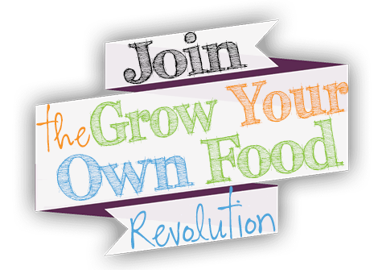

For starters, we have developed The Urban Farm Lifestyle Newsletter (the communication you are reading now), which is a collection of educational articles and information to assist you in creating your own urban farm. With your help, our team will be compiling stories, tips and articles all about living the Urban Farm Lifestyle. We will bring this newsletter to you every other Tuesday, but you can certainly connect with us via email, on our blog, and at the10,000 Urban Farms Project in the interim. Content will include gardening, farming, nutrition, small livestock, canning…and oh so many more sustainability topics.
We look forward to having you join us on this grand adventure.
Your Urban Farmer
Balveer singh
